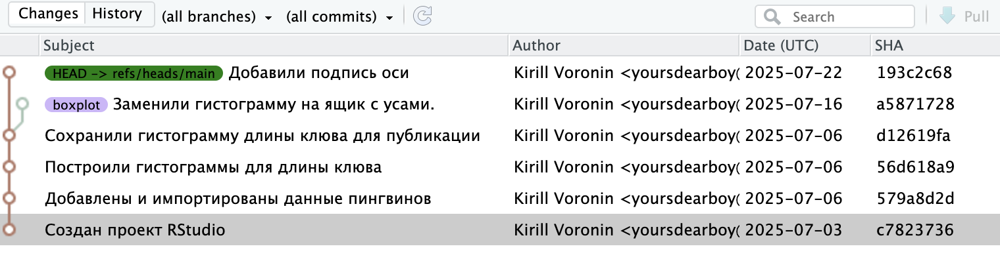
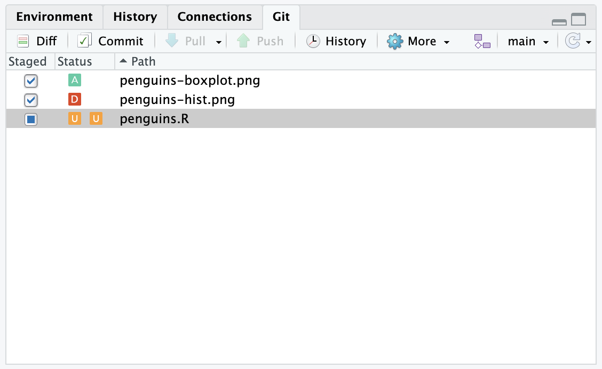
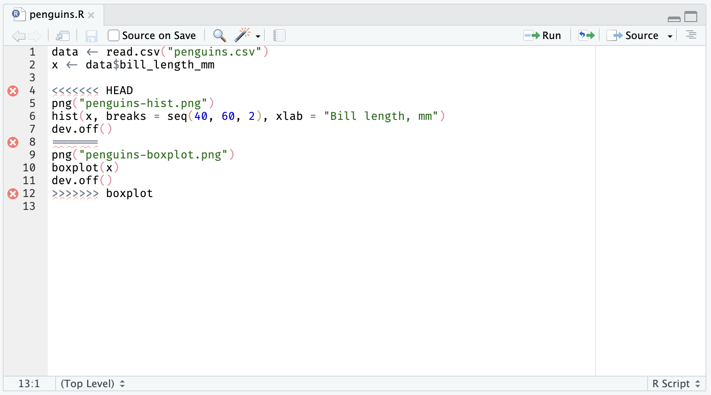
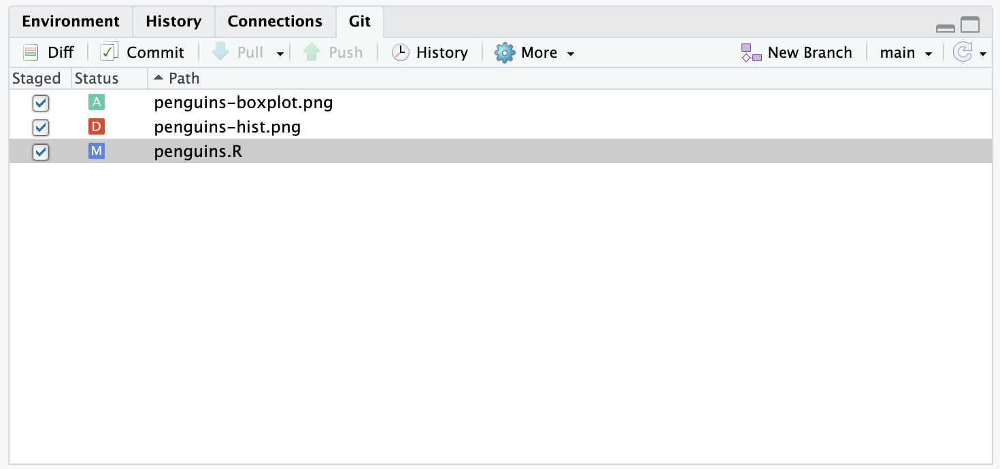
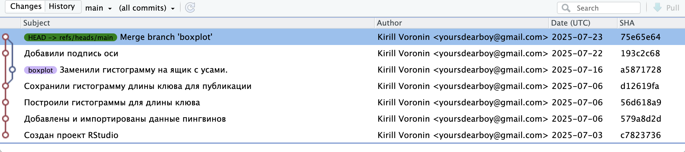

Глава 12 Слияние веток
Откройте окно истории и выберите в фильтре сверху показывать все ветки (all branches) и все коммиты (all commits). На диграмме наглядно видно почему это называется веткой.

Если мы или другой участник проекта, решим принять эти изменения в основную ветку main,
нам нужно выполнить операцию «слияния» (merge).
В RStudio нет встроенной возможности слияния веток, это необходимо делать в терминале.
К счастью, команда совсем не сложная.
Для начала переключитесь на ветку, в которую будут вливаться изменения —
в нашем случае это main (см. переключение веток).
Откройте терминал 2 и введите команду для слияния с веткой boxplot.
Git попытается автоматически объединить изменения из обеих веток и создать новый коммит. В большинстве случаев этого достаточно, но любая совместная работа может приводить к конфликтам — когда в обеих ветках была изменена одна и та же строка, но разным образом. Какую версию предпочтет Git? Git предпочтет выдать ошибку и попросит вас разрешить конфликт.
В списке изменений мы видим,
что Git автоматически выбрал изменения связанные с новым и старым файлом для графика
penguins-hist.png и penguins-boxplot.png,
но лишь частично для скрипта penguins.R.

Причина в том, что мы вносили изменения в код графика в ветке main после того как изменили его в ветке boxplot.
Откройте файл penguins.R.
Git любезно оставил для нас обе версии кода разделив специальными символами.
После строки <<< HEAD идет версия из текущей ветки,
строка === отделяет две версии друг от друга,
а строка >>> boxplot завершает версию из ветки boxplot.

Наша задача переписать выделенный участок (строки 4-12) в одну версию и убрать спецсимволы. Важно понимать, что Git просто вставил в скрипт кусок текста, но это все еще обычный R скрипт и мы должны привести его в рабочее состояние.
Нам нужна версия из ветки boxplot, но мы хотим добавить в нее подпись оси, как это было сделано в ветке main.
Для этого оставим нижнюю версию (строки 9-11) и удалим лишние строки (4-8 и 12)
и добавим подпись, только для ящика с усами это должна быть подпись оси Y.
В итоге должен получиться следующий код.
data <- read.csv("penguins.csv")
x <- data$bill_length_mm
png("penguins-boxplot.png")
boxplot(x, ylab = "Bill length, mm")
dev.off()Сохраните файл и выполните скрипт.
Создайте коммит и
не забудьте отметить галочкой внесенные изменения,
в том числе обновившийся файл penguins-boxplot.png, который теперь содержит подпись оси.
Обычно сообщение коммита о слиянии веток содержит следующий текст «Merge branch название-ветки», но можете придумать свое.

Итак, мы успешно слили изменения из ветки boxplot в основную ветку main.
Теперь можно продолжить работу в основной ветке.
Еще лучше будет создать очередную ветку для новых изменений, выполнить работу в ней и точно так же слить в основную.

Как удалить ветку?
Слитую ветку можно удалить. В RStudio для этого нет встроенных средств, поэтому придется использовать терминал. Выполните команду:
Если ветка не была слита, Git откажется ее удалять, ведь могут быть потеряны сделанные в ней изменения. Если вы действительно уверены, что они вам не нужны и вы хотите удалить не слитую ветку, выполните команду: